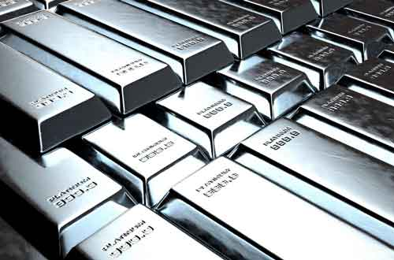
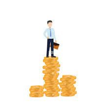

Unit Trusts
Make every dollar count when you are making an investment. Invest in Unit Trusts which are professionally managed fundsto help you grow your wealth. A Unit Trust invests a pool of money, collected from a number of investors, in a range of assets. By pooling your money with that of other investors, you'll be able to invest in a wide range of assets. Successful investments in the assets add value to the fund and their returns are then distributed back to investors. If you want to find out more, click on the bottom to find out more !
Gold & Silver
Gold can diversify your portfolio. It has a low connection with assets like stocks and bonds so when the stock market goes down, gold prices may go up. Gold is your physical asset which provides security and control as you can touch and see it physically. Gold is a secure asset when there is inflation or financial crisis, you can turn to gold as a store value. If you want to find out more, click on the bottom to find out more !
Structured Deposits
Structured deposit is an investment product, where the returns is dependent on the performance of underlying financial instruments such as the market indices, interest rates, foreign exchange, or a combination of these. The returns are guaranteed upon maturity so get started investing in Structured Deposits now ! Click on the button to find out more and get started !
Singapore Government Securities (SGS)

SGS are debt instruments issued and fully backed by the Singapore government. It consists of a few types of it such as Treasury Bills, SGS Bonds, Singapore Savings Bonds If you want to find out more, click on the bottom to find out more !
CPF Investment Account
With the CPF Investment Account in place, you can invest your Ordinary Account and Special Account savings in a wide range of products. If you want to find out more, click on the bottom to find out more !
SRS Account
A Supplementary Retirement Scheme (SRS) account helps you to save on taxes while saving up for your retirement at the same time. As the saying goes, a dollar saved is a dollar earned, contributions to your SRS account will give you dollar-for-dollar tax relief* which means that the extra dollars you get will put towards your retirement savings. If you want to find out more, click on the bottom to find out more !